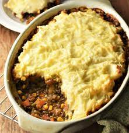

Description
Shepherd's pie but with lentils, html test based on this
- 50g butter
- 2 Onions, chopped
- 4 carrots, diced
- Celery
- 4 garlic cloves
- 200g pack chestnut mushrooms, sliced
- 500g pack dried green lentils
- 100ml red wine (optional)
- 1.7L vegetable stock
- 3 tbsp tomato purrée
Instructions
- To make the sauce, heat 50g butter in a pan, then gently fry 2 chopped onions, 4 diced carrots, 1 chopped head of celery and 4 finely chopped garlic cloves for 15 mins until soft and golden.
- Turn up the heat, add 200g sliced chestnut mushrooms, then cook for 4 mins more.
- Stir in 2 bay leaves and 1 tbsp dried thyme, then add 500g green lentils. Pour over 100ml red wine and 1.7l vegetable stock – it’s important that you do not season with salt at this stage.
- Simmer for 40-50 mins until the lentils are very soft.
- Season to taste, take off heat, then stir in 3 tbsp tomato purée.
- While the lentils are cooking, tip 2kg floury potatoes into a pan of water, then boil for about 15 mins until tender. Drain well, mash with 85g butter and 100ml milk, then season with salt and pepper.
- To assemble the pies, divide the lentil mixture between all the dishes that you are using, then top with mash.
- Scatter over 50g grated cheddar and freeze for up to two months or if eating that day, heat oven to 190C/fan 170C/gas 5, then bake for 30 mins until the topping is golden.
Return to top
Return home